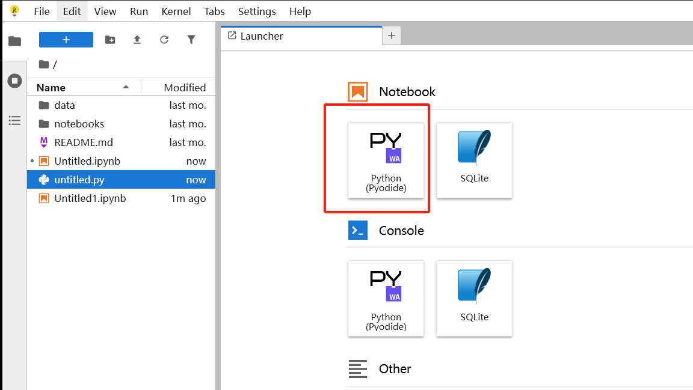
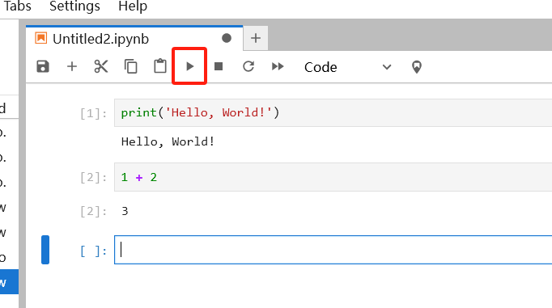
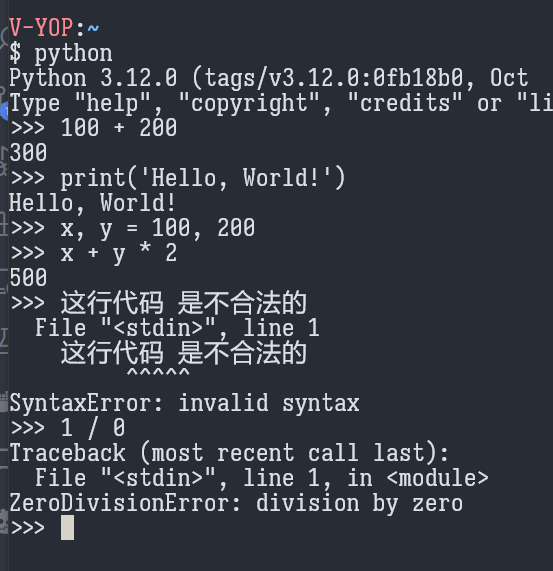

编程入门 02——为什么是 Python，表达式和语句
注意——学习编程和学习其他科学技术的一个最大的区别是，程序是可以实际执行的，你应当像玩一个沙盒游戏一样，去进行各种尝试。通过实验去自己发现新东西，这事情其实蛮好玩的。所谓知行合一，在编程的学习上可谓体现地淋漓尽致。
安装 Python，VSCode
关于 Python 和 VSCode 的安装，以及如何打开 Python 的交互式执行环境，网上有现成的教程可用，我就不再重复了。切记，下面的内容一定要实操。
也有一些在线环境可以让你学习 Python，比如 https://jupyter.org/try-jupyter/lab/，你点击这个按钮：

然后在其中编辑和执行你的代码，注意这些代码是可以分块执行的，对测试来说很方便：

为什么是 Python
Python 是解释型语言
编程语言主要可以分为两类——解释型语言和编译型语言。
编译型语言的特点是，它的代码无法直接执行，而是需要经过一个被称为编译的步骤，将人类可读的代码，转换为机器可读的二进制代码。因此，编译型语言相对来说使用较麻烦。
而解释型语言的特点是，它的代码是可以被一行一行地直接执行的，解释型语言相对来说会稍微慢一些，但它有一系列优点：
- 解释型语言通常会提供交互式的代码执行环境——你可以输入一行代码，然后这行代码马上就执行，并输出结果给你，这使得解释型语言更加容易学习和查错（称为 debug）
- 解释型语言的代码文件通常是可以直接执行的，因此可以方便地分别地测试各个代码文件；而编译型语言的代码文件则可能无法直接执行，而必须通过一个主入口去执行
显然，这两个优点让解释型语言更容易进行学习，而 Python 就是一个解释型的语言，它很好学，而且极其适合编写那些只使用一次的代码。
比如，下面就是在 Python 的交互式执行环境（称为 REPL，Read-Eval-Print-Loop，读取代码、执行代码、打印结果、循环）中玩耍的内容，其中 >>> 开头的是我的输入，而其他的是 Python 给我的回应：

注意到，我输入了语法错误，或者执行错误的代码时，Python 能够把错误原因（不合法的语法，除以零）告诉我，这让 Python 语言可以进行实验。
Python 很“明显”
这是 Python 的优点其一，另一个优点是，Python 语言简洁且明显，Python 的代码很多时候能直接反映它要解决的问题。
虽然这里假设读者还没有开始接触编程，但这里举出用 Python 解决一个实际需求的例子来积累一下对 Python 的感性经验：考虑要检查一个文本文件中有多少个空行：
Python 语言可以这么写（这种写法是不优美的，实际上有更好看且实用的写法）：
1 | |
我再使用伪代码（就是仅供说明用的代码，无法真的执行的）来表述一下同样的逻辑：
1 | |
注意到，Python 几乎是可以和伪代码的形式完全对应上的。
与之相对地，再举一下使用 Perl 语言实现同样功能的例子：
1 | |
扯够了理论，来开始实操吧，在读到这里的时候，你应当已经安装和配置好了 Python。
表达式和语句
这一节的内容，尝试得到感性经验即可，不用深究。
先打开 Python 的 REPL，假装 Python 是一个计算器吧！但在一切开始之前，先不要问太多，执行下面的代码：
1 | |
如果你实在好奇这一行代码是什么意思，那我就告诉你——这行代码把 math 模块下的所有成员，导入到当前命名空间中。执行这一行代码是为了让三角函数和 $\pi$ 可用。
尝试执行下面的内容（在执行前，先尝试思考一下它执行的结果可能是什么），注意 Python 的 REPL 是一行一行执行代码的，每次输完一行你需要按回车它才会执行：
1 | |
上面的每一行的，像算式一样的内容，都是合法的 Python 代码，更具体的说，这些每一行的内容，都是所谓的表达式 Expression。表达式被 Python 执行，得到值 Value。比如，1 + 1执行得到值2，10 == 10执行得到值True，sin(pi / 2)执行得到值 1。
表达式就像数学算式一样，它形式多样，是可以任意组合的，比如，1 + 2 是表达式，而 1 + 3 * (1 + 2) 同样是表达式。
编程语言，极端简化地说，只有两个部分——表达式 Expression 和语句 Statement，所以我们已经学会了一半了，欧耶（当然是开玩笑的（（。
上面说了表达式，而语句，则是编程语言中结构相对固定的那部分，语句的结构非常受编程语言语法的约束，不能乱来，比如，下面的这些就是 Python 中一些语句的示例，注意到对于语句，我们通常可以使用自然语言去描述它：
1 | |
注意到，语句就像一个框架，然后你可以在这个框架中安排表达式或者其他语句。
表达式执行，产生值，而语句并不产生值，语句定义程序的执行流程，或者说结构。
但这里也提一嘴——表达式本身也是语句，可以独立出现，比如下面的代码也是合法的，只是无意义：
1 | |
在学习编程语言的时候，你可以特别去注意——这是一个表达式还是一个语句？常问这个问题有助于避免犯一些根本性的错误。
Hello，World！
上面我们把 Python 当作是一个计算器去玩耍，同时介绍了表达式和语句的概念，下面该来点编程语言特有的东西了。
接下来，完成一个好玩的仪式——学习一门新语言的第一步，输出“Hello, World!”，来开始真正的学习。在 REPL 中执行，或者使用 VSCode 创建一个后缀为.py的文件，填入下面的代码并执行：
1 | |
这里预先提及一下一个有趣的事情——这里的 print，和上面的 sin，cos，没有本质上的区别，尝试执行一下表达式 print(print)，print(print(1))，print(100, print(1), print(2))，看看会发生怎样的现象？
以及，尝试修改它的内容，比如，输出自己的名字？
通过这些实验，你能看出来 print 函数的用途和返回值吗？看不出也不要紧，这里只是为了好玩。
本博客所有文章除特别声明外，均采用 CC BY-NC-SA 4.0 协议 ，转载请注明出处！